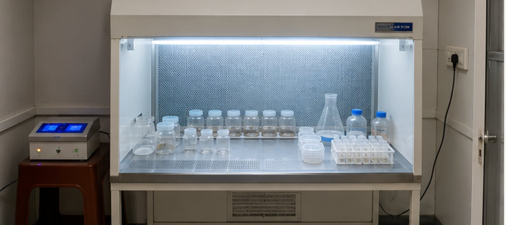
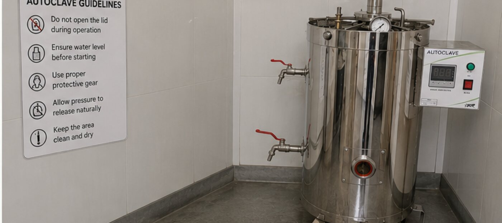
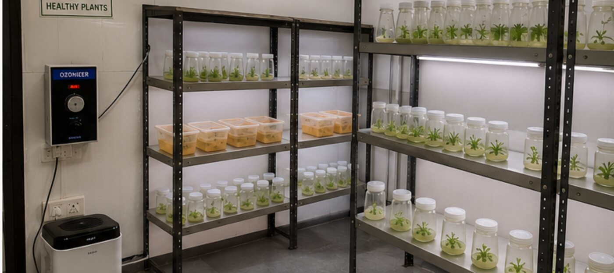
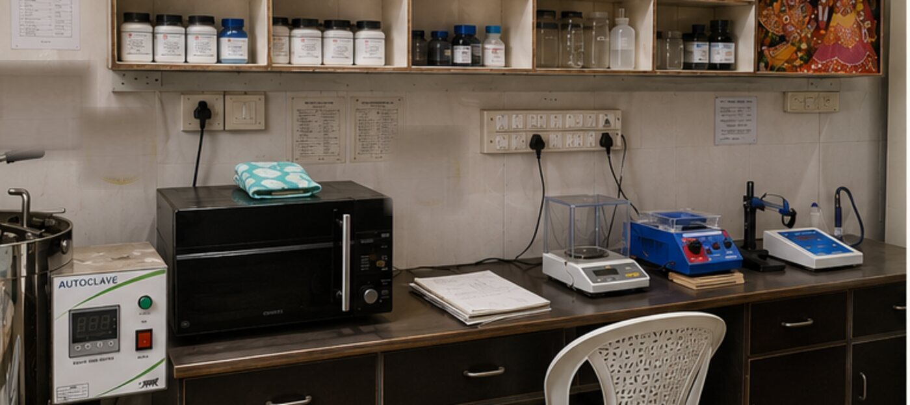

About Us
Who We Are
Founded by Nishant (MSc in Microbiology) and Riya Yadav (MBA in Finance and HR), our lab focuses on bridging the gap between academic research and real-world applications in plant tissue culture, aquaculture and biotechnology.
Our Mission
To develop sustainable, scalable, and scientifically validated solutions for:
- Plant propagation systems
- Aquaculture production
- Algal biotechnology
Our Vision
To become a leading center for business, research, training, and innovation.
Our Team
The people behind the lab
Nishant
MSc in Microbiology - Plant tissue culture, algal biotechnology & aquaculture.
Riya Yadav
MBA in Finance and HR - Operations, finance & people management.
Dr. R. Purushothaman
PhD in Marine Biotechnology - Macroalgae & microalgae.
Diksha Dalal
Tissue Culture Technician.
Shikhar Jha
Web AI innovation.
Our Facility
Four rooms, one sterile workflow
Media is prepared under laminar flow, sterilised in the autoclave, inoculated and grown in a dedicated culture room - each step in its own controlled space.

Media Preparation
Fresh sterile media prepared under laminar air flow, under aseptic conditions.

Autoclave & Sterilisation
Media, glassware, instruments and waste sterilised at high pressure and temperature.

Plant Tissue Culture Room
In vitro cultures of Rotala, Cryptocoryne, Monte Carlo, Utricularia and more. An ozonizer maintains sterility and reduces microbial contamination.

Chemicals, Stocks & Instruments
Chemicals, glassware and stock solutions, with pH meter, magnetic stirrer and a 0.001 mg weighing balance.